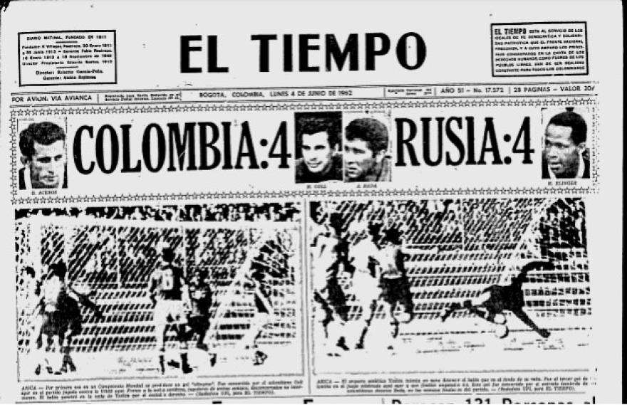
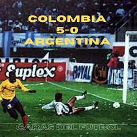
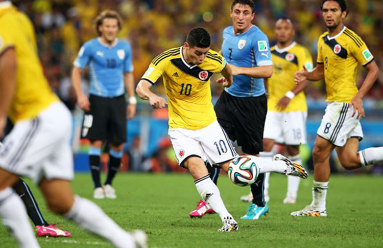
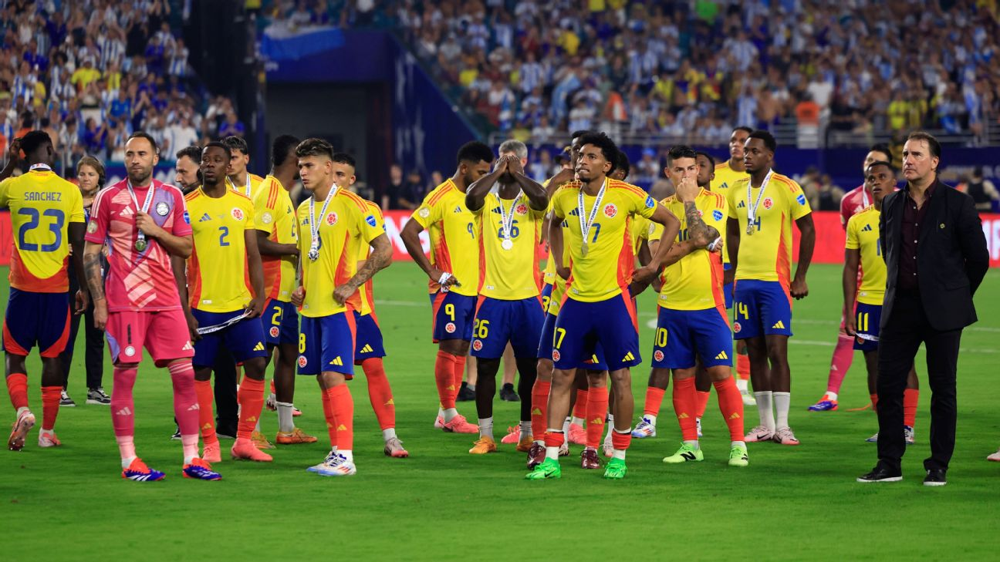

Hitos a nivel de seleccion
A lo largo de su historia, la Selección Colombia ha protagonizado momentos que marcaron un antes y un después en el fútbol del país. Desde su primer gol olímpico en un Mundial hasta la conquista de la Copa América, estos hitos representan los logros más importantes y simbólicos de la Tricolor. Cada uno refleja no solo avances deportivos, sino también el crecimiento y la identidad de un equipo que ha sabido superar obstáculos y dejar huella en el panorama internacional. A continuación, repasamos los principales hitos que han forjado el legado de la Selección Colombia.
Primer mundial-Chile 1962
Colombia debutó en la Copa Mundial de la FIFA en 1962, celebrada en Chile. Integró el Grupo A junto a Uruguay, Yugoslavia y la Unión Soviética. Aunque fue eliminada en la fase de grupos, el equipo logró un empate 4-4 contra la URSS, en el cual Marcos Coll anotó el único gol olímpico en la historia de los mundiales, venciendo al legendario arquero Lev Yashin .

Mundial de Italia 1990
Tras 28 años de ausencia, Colombia regresó a un mundial en Italia 1990. Bajo la dirección de Francisco Maturana, el equipo avanzó a octavos de final por primera vez. En la fase de grupos, venció 2-0 a Emiratos Árabes Unidos, perdió 1-0 contra Yugoslavia y empató 1-1 con Alemania Federal, con un gol agónico de Freddy Rincón. En octavos, cayó 2-1 ante Camerún en tiempo extra, en un partido recordado por un error del arquero René Higuita .

Goleada 5-0 a Argentina - 1993
El 5 de septiembre de 1993, Colombia logró una histórica victoria 5-0 sobre Argentina en el estadio Monumental de Buenos Aires, durante las eliminatorias al Mundial de 1994. Los goles fueron anotados por Freddy Rincón (2), Faustino Asprilla (2) y Adolfo "El Tren" Valencia. Esta victoria aseguró la clasificación directa de Colombia al mundial y es considerada una de las mayores gestas en la historia del fútbol colombiano .

Mundial Brasil 2014
Después de 16 años sin participar en un mundial, Colombia regresó en 2014 bajo la dirección de José Pékerman. El equipo tuvo su mejor actuación histórica, alcanzando los cuartos de final. En la fase de grupos, venció a Grecia (3-0), Costa de Marfil (2-1) y Japón (4-1). En octavos, derrotó 2-0 a Uruguay, y en cuartos cayó 2-1 ante Brasil. James Rodríguez fue el máximo goleador del torneo con 6 goles y recibió el premio al mejor gol del campeonato .

Mayor invicto 2022-2024
Desde el 17 de noviembre de 2022 hasta el 14 de Julio de 2024 la selección no conoció la derrota pues durante ese intervalo de tiempo ilusionó a un pais entero con su juego teniendo victorias destacadas como 2-1 a Brasil por eliminatorias mundialistas algo nunca antes visto, tambien se le ganó a potencias como Alemania y España, pero el nivel que mas marcó a un pais fue el demostrado en la Copa America USA 2024 donde clasificó a una final de Copa América despues de 23 años donde pudimos ver el notable nivel y el renacimiento de James Rodríguez, lastimosamente la copa no se nos dió perdiendo 1-0 ante Argentina, dejando un saldo de 28 partidos sin perder a partir de 17 victorias y 6 empates.
